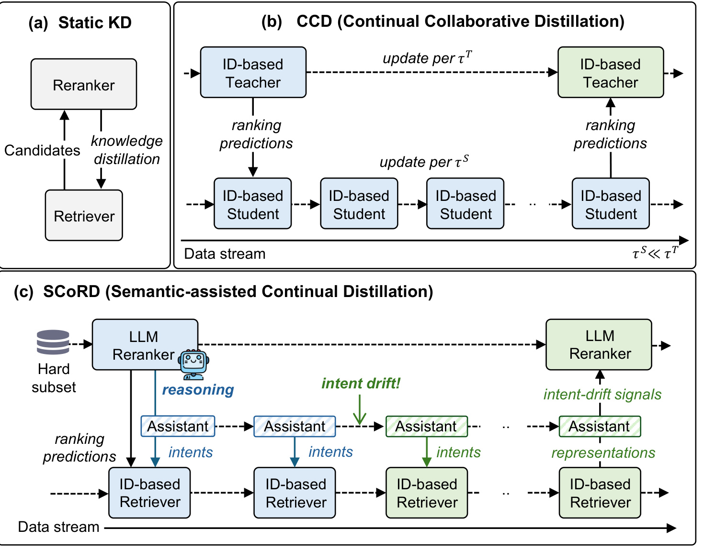
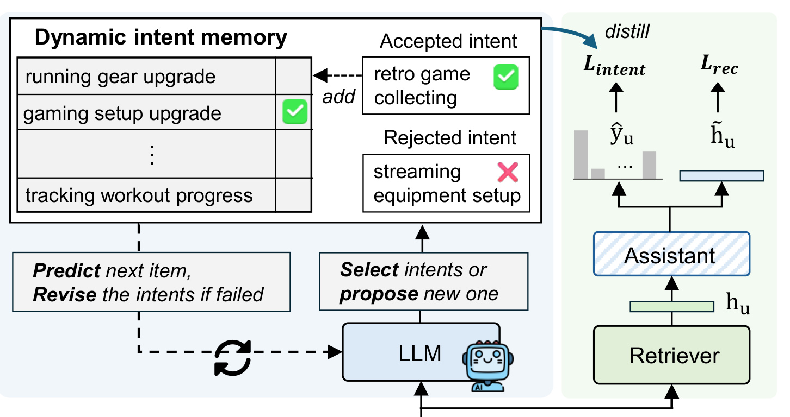
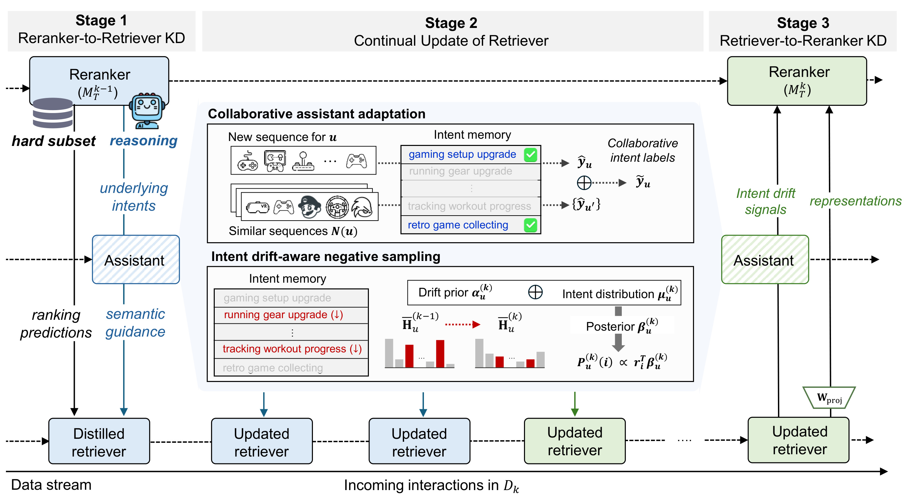
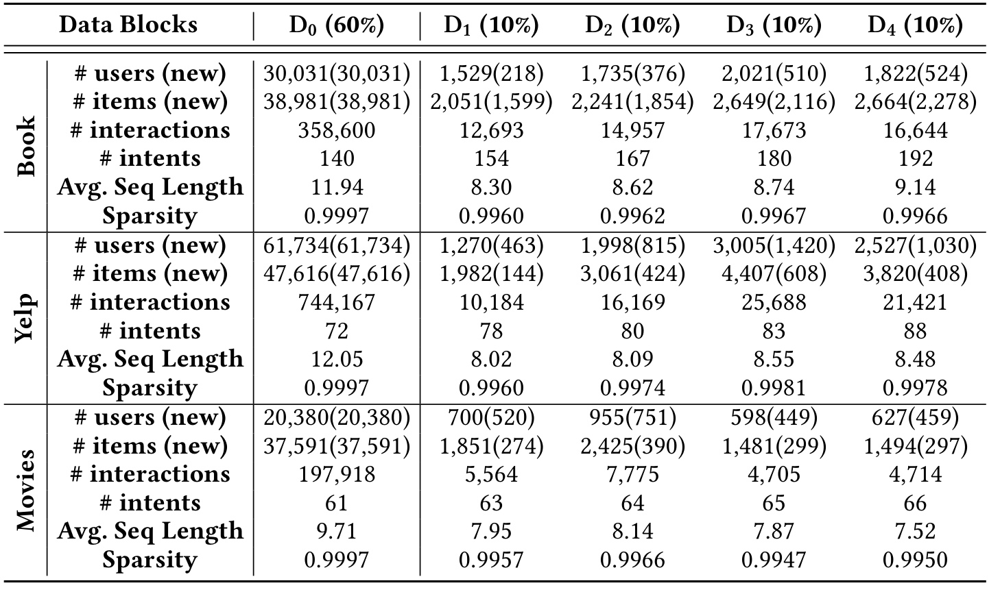
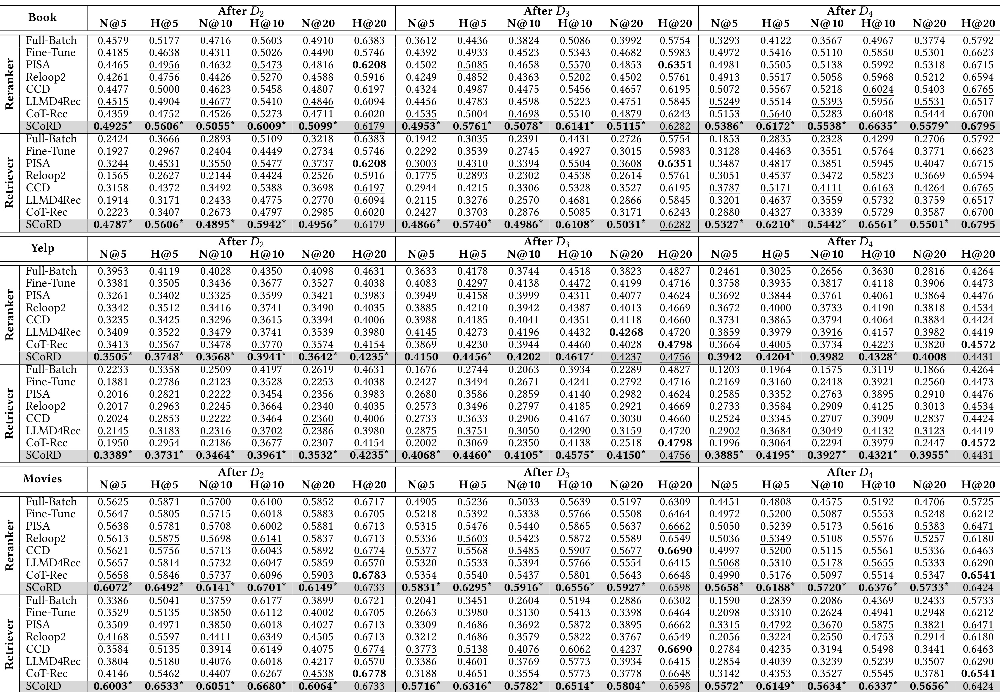
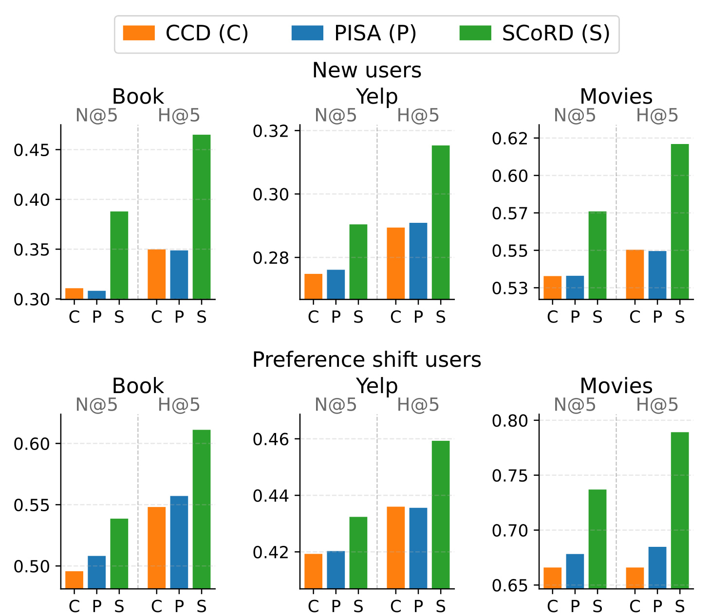
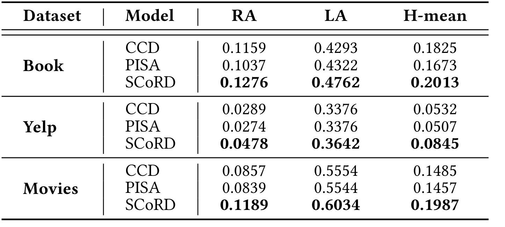
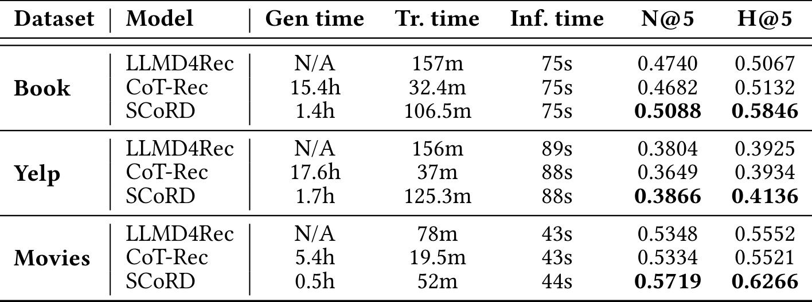
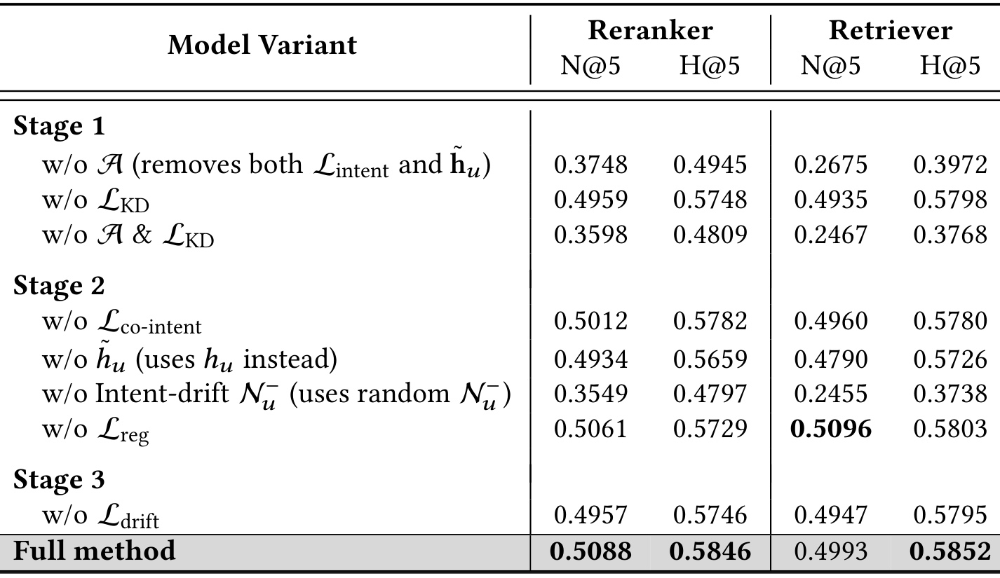

SCoRD: Semantic-Assisted Continual Retriever-Reranker Distillation for LLM-Based Recommendation
SCoRD（语义辅助持续检索器—重排器蒸馏）研究轻量 ID 检索器高频更新、LLM 重排器低频更新时如何共同适应兴趣变化。作者为 Seunghyun Baek、Gyuseok Lee、Seunghan Lee、Wonbin Kweon、Dong Wang 与 SeongKu Kang；第一作者主机构是高丽大学，合作机构包括伊利诺伊大学厄巴纳-香槟分校与成均馆大学。PDF 标注 CIKM 2026 和 DOI 10.1145/3799682.3840906。论文入口为 arXiv:2608.19998。本轮未核验到独立代码仓库。
非平稳交互流要求检索器与 LLM 重排器持续共同适应，但反复更新并调用重排器的成本过高；若重排器长期不更新，蒸馏监督会逐渐过时，而只让容量受限的检索器从稀疏新交互中学习，又缺少足够的语义指导。
1. 背景和问题
1.1 两阶段推荐的能力与成本错位
大规模推荐通常先由检索器从全量物品中找出一个较小候选集，再由重排器对候选精排。SCoRD 采用的检索器是 SASRec 一类 ID-based sequential model，优势是对全物品打分便宜、适合频繁吸收新交互；重排器则基于 LLM，通过物品文本和序列语义推断用户偏好，能识别“升级游戏设备”“寻找价格友好的电子产品”这类 ID 共现之外的意图。两阶段结构把可扩展性和语义判断结合起来，但也产生了强烈的不对称：论文实测 LLM 重排器的训练时间是 ID 检索器的 3.5–9.4 倍，推理时间是 72.4–144.4 倍。因而“每天更新检索器、每周更新重排器”比同步更新更接近实际约束。
在静态训练中，可以把重排器的排序列表或分数蒸馏给检索器，让检索器更早召回高质量候选，候选改善又会抬高最终重排效果。但进入数据流后，新用户、新物品、流行度与个人兴趣不断变化。若仍用旧重排器监督，检索器学到的是旧分布下的排序；若每个小时间窗都重跑 LLM 蒸馏，成本会吞掉轻量检索的意义；若完全取消教师信号，新增块通常很稀疏，SASRec 很难单凭少量 ID 交互恢复潜在意图。这里的难点并非一般的“灾难性遗忘”，而是两个能力、知识来源和更新周期都不同的模块如何交换最新知识。
1.2 为什么静态 KD 与 CCD 不够
已有 CCD 把 ID-based teacher 和 student 的周期拆开：教师低频给排序预测，学生高频更新；学生的高排名预测又补充下一次教师训练。这解决了异步更新形式，却默认师生都主要使用协同信号，容量差距也相对有限。LLM 重排器的价值不只是一串排序分数，它还在调用时完成语义推理。若只蒸馏最终排名，最昂贵的推理过程没有变成可复用资产；在两次教师更新之间，检索器仍看不到语义。反向来看，高频检索器更早接触新行为，如果它的最新表示和兴趣漂移没有传回重排器，低频更新的 LLM 仍需从零解释新块。

Figure 1 的三列恰好把差异压缩成三条信息流。(a) 静态 KD 只有一次从 reranker 到 retriever 的排名传递，不处理时间；(b) CCD 让 ID teacher 与 ID student 以不同周期交换 ranking predictions，却没有语义模块；(c) SCoRD 把有限 LLM 调用集中到检索器低置信序列，并让 assistant 保存 intents。蓝色路径把 LLM reasoning 变成可重复调用的语义指导，绿色路径则在检索器高频更新时传播意图、检测 drift，并在重排器更新时回传 intent-drift signals 与 representations。需要注意，这张图表达的是训练和维护机制，不代表 assistant 在每次线上请求中重新调用 LLM；恰恰相反，论文希望用记忆选择替代频繁自由生成。
由此，论文把问题拆成三个可检验问题。第一，昂贵 LLM 监督应该给哪些序列，才能用小样本完成有效蒸馏？第二，如何把 LLM 的意图推断保存为两次重排器更新之间仍可使用的轻量指导？第三，如何把高频检索器捕捉到的新协同模式和兴趣衰退信号反向送给 LLM 重排器？SCoRD 的贡献不在于提出又一个单模型 continual learner，而在于重新设计 retriever-reranker knowledge interface：排名知识仍然保留，但语义意图被单独建模，双向传递也围绕异步周期组织。这样，论文的评估目标必须同时包含排序质量、旧知识保留、新块学习与 LLM 调用成本。
2. 方法
2.1 在基础块构造语义推理助手
论文先在基础块 (D_0) 构造 semantic reasoning assistant (A)。为避免用另一个大模型自由生成意图，SCoRD 把 LLM 推理改成动态记忆选择：LLM 根据序列和当前 (\mathcal G^{(0)}) 选择旧意图或提出新意图，但候选必须通过行为验证才写入记忆。系统留出最后一个物品，与 5 个随机负例组成 6 选 1 题；失败则反馈错误并最多修订三次，仍失败就暂不记录。核心机制是把“听起来合理”约束为“能解释下一项行为”，再让轻量 assistant 学会从已验证记忆中选择。
符号解释：(h_u=M_S(S_u)) 是检索器序列表征，(p_c) 是意图嵌入，(W_q,W_k,W_v) 产生 query/key/value，(\hat y_{u,c}=\sigma(q_u^\top k_c)) 表示意图相关性；(\phi(n)=n\mathbf I[n>0.5]) 过滤低分意图，(\tilde h_u) 将保留的 value 残差加回 (h_u)。因此 assistant 输出仍是低维向量，不执行文本生成；无可靠意图时协同表征仍是主干。
符号解释：(y_{u,c}=\mathbf I[c\in\mathcal G_u]) 来自 LLM 验证过的多标签意图，(\hat y_{u,c}) 是 assistant 预测，(\mathcal L_{\mathrm{rec}}) 用 (\tilde h_u) 完成 next-item learning，(\lambda_{\mathrm{intent}}) 平衡两项监督。训练需要生成并验证意图；推理只做记忆选择和向量融合，这是 SCoRD 节省重复 LLM 调用的基础。

Figure 2 左侧给出 dynamic intent memory：已有意图可直接复用，新意图必须经过“用最后物品做下一项验证—失败则修订”的循环；右侧显示 retriever 产生 (h_u)，assistant 一方面预测 (\hat y_u) 接受 (\mathcal L_{\mathrm{intent}}) 监督，另一方面输出 (\tilde h_u) 接受 (\mathcal L_{\mathrm{rec}}) 监督。图中 accepted 与 rejected intent 很重要：SCoRD 并不声称自然语言意图天然可靠，而是以行为预测作为筛选器。其局限也随之出现——验证题只有 5 个随机负例，成功并不等价于意图在全物品空间中完全正确，且记忆质量仍受 LLM 初始推断影响。
2.2 Stage 1：把有限 LLM 监督集中到困难序列
进入增量块 (D_k) 前，Stage 1 使用截至 (D_{k-1}) 的重排器，只在检索器低置信序列上支付 LLM 成本。置信度与 listwise distillation 分别写为：
符号解释：(\rho_u) 衡量语义表征 (\tilde h_u) 对序列内物品嵌入 (e_i) 的平均对齐，底部 (r\%) 构成 (D_{k-1}^{\mathrm{hard}})，论文默认 (r=20)；(\pi_u(j)) 是 LLM 重排列表第 (j) 项，(\tilde s_{u,i}=\tilde h_u^\top e_i)，(N) 是蒸馏长度。第二式逐位置复现教师顺序，Stage 1 再叠加 (\lambda_{\mathrm{intent}}\mathcal L_{\mathrm{intent}})，让排名回答“顺序是什么”、意图回答“为何困难”。风险是模型自身若对错误模式过度自信，hard subset 会漏掉真正难例。
2.3 Stage 2：检索器高频更新中的协同意图与漂移负样本
Stage 2 每隔较短周期 (\tau_S) 在新交互上更新检索器，此时不再调用 LLM。新序列没有验证过的意图标签，如果直接用 assistant 自己的预测做 pseudo-label，错误会自我强化。论文改用 mini-batch 内行为表征最相似的 top-(K) 用户，让共同出现的意图相互校正：
符号解释：(\mathcal N(u)) 是按 (\cos(h_u,h_{u'})) 选出的行为相似用户集合，(w_{u,u'}) 是在邻居上 softmax 归一化的余弦权重，(\hat y_{u,c}) 与 (\hat y_{u',c}) 是本人及邻居对意图 (c) 的预测，(\tilde y_{u,c}) 是 collaborative intent label。它用群体一致性降低单序列噪声，但也可能放大热门意图，长尾用户被不相似多数邻居覆盖是一个复现时必须检查的风险。
对兴趣漂移，SCoRD 先把序列投到意图空间，再用检索器认为“仍有可能”的未交互物品平滑稀疏块间差分：
符号解释：(r_i) 是物品—意图相关向量，(H_u^{(k)}) 是当前块意图直方图，(\alpha_u^{(k)}) 强调跨块频率下降的意图；(\mu_u^{(k)}) 是 top-(Q) 未交互候选的平均意图证据，论文设 (Q=100)，(\beta_u^{(k)}) 是平滑 posterior。负采样概率与 (r_i^\top\beta_u^{(k)}) 成正比，优先抽取“过去相关、当前衰退”的物品。它比随机负例贴近 drift，但平滑只能缓解稀疏差分误差，不能证明下降一定是真实兴趣变化。
符号解释：(\mathcal L_{\mathrm{rec}}) 使用意图漂移负样本，(\mathcal L_{\mathrm{co-intent}}) 用协同伪意图监督 assistant，(\mathcal L_{\mathrm{reg}}=\sum_{u\in U_{k-1}\cap U_k}|h_u^{(k-1)}-h_u^{(k)}|_2^2) 限制共同用户表征剧烈移动；两个 (\lambda) 控制可塑性与稳定性。该阶段的输入是新交互、旧/新块表征和动态记忆，输出是更新后的 retriever 与 assistant；整个循环不需要再次运行 LLM。
2.4 Stage 3：检索器反向指导重排器
到较长周期 (\tau_T) 时，Stage 3 才更新 LLM 重排器。SCoRD 将最新检索器 item embedding (e_i) 经 (x_i=W_{\mathrm{proj}}e_i) 投影到 LLM input embedding space，用投影序列构造推荐编码提示；LLM 输出序列表征，再接线性 softmax 层预测下一物品。这样，重排器不是只看新块文本，而是直接接收高频检索器已经吸收的协同结构。
除全物品 next-item cross-entropy 外，重排器还比较真值与 Stage 2 产生的 faded-intent negatives：
符号解释：(\mathcal L_{\mathrm{CE}}) 在完整物品分布上训练 ground-truth next item，(\mathcal L_{\mathrm{drift}}) 只在正例与漂移负样本集合上重新归一化，(\lambda_{\mathrm{drift}}) 控制显式兴趣衰退信号强度；训练参数包括 LLM 的 LoRA adapter、预测层与 (W_{\mathrm{proj}})。推理时，retriever 用 (\tilde h_u^\top e_i) 取 top-20，再由重排器的预测分布对候选排序；assistant 的意图选择保留，LLM 意图生成和验证不在每次请求路径上。

Figure 3 可按时间从左到右读。Stage 1 只在 hard subset 上支付 LLM reasoning 成本，把 ranking predictions 和 underlying intents 分别给检索器与 assistant；Stage 2 中蓝色路径持续把 semantic guidance 注入多次 retriever update，中心上半部用相似序列聚合 (\tilde y_u)，下半部把意图直方图差分与候选证据合成 (\beta_u^{(k)})；Stage 3 的绿色路径再把 intent drift signals 与最新 representations 送回 reranker。底部虚线 data stream 强调这些不是一次性模块拼装，而是不同频率的循环。训练时三阶段使用的监督不同；在线推理只运行 assistant、retriever 和最终 reranker，不会执行意图验证、记忆扩展或参数更新。
3. 实验结果
3.1 公开数据上的非平稳流式协议
实验使用 Amazon Books、Yelp 与 Amazon Movies & TV，分别取最近 3 年、5 年和 2 年交互。每个数据集按时间切为五块：最早 60% 构成基础块 (D_0)，后续 40% 均分为 (D_1) 到 (D_4)，每块 10%。训练某个增量块时不能直接访问更早数据；每条块内序列最后一项作测试、倒数第二项作验证，其余训练。论文在 (D_2)–(D_4) 报告 5 个随机种子平均的 NDCG 与 Hit Rate@5/10/20，理由是早期块的偏好漂移较弱。

Table 1 展示的不是生产流量，而是公开历史交互上的 chronological simulation。Books 的 (D_0) 有 30,031 位用户、38,981 个物品和 358,600 次交互，后续块交互只有约 1.27–1.77 万；Movies 的增量块更小，约 0.47–0.78 万交互。三个数据集稀疏度都接近 0.995 以上，并持续出现新用户和新物品，动态意图数也随块增长，例如 Books 从 140 增至 192。这个设置确实制造了稀疏增量与冷启动压力，但它仍是离线流式协议，没有流量分桶、延迟反馈、曝光偏差控制或真实业务 A/B，因此不能把结果写成“线上效果已验证”。
所有方法共享 E4SRec reranker 与 SASRec retriever。重排器以 Llama-3.2-3B-Instruct 做 LoRA，检索器是维度 128 的两层 SASRec。对照包括 Full-Batch、Fine-Tune、PISA/Reloop2、CCD，以及扩展到流式设置的 LLMD4Rec、CoT-Rec。Full-Batch 能访问累积数据，只是参考口径，资源条件与不访问旧块的方法不同。
3.2 主结果：早排与检索器收益最明显

Table 2 最大的信号是 SCoRD 对 retriever 的提升尤其大。以 Books 的 (D_4) 为例，SCoRD retriever 的 N@5 为 0.5327、H@5 为 0.6210，而 CCD 为 0.3787 和 0.5171；reranker 同期 N@5 为 0.5386，优于 LLMD4Rec 的 0.5249 与 CCD 的 0.5072。Movies 的 (D_4) 也类似：SCoRD retriever N@5/H@5 达到 0.5572/0.6149，reranker 为 0.5658/0.6188。优势从检索器传到重排器，符合“候选质量提高后最终排序也受益”的链路解释。
但完整表格也给出重要边界。SCoRD 在 N@5、H@5 等前列精度上最稳定，H@20 的优势却弱得多，部分格子甚至不如最佳基线。例如 Yelp (D_4) 的 reranker H@20，SCoRD 为 0.4431，而 CoT-Rec 为 0.4572；Movies (D_4) 的 reranker H@20，SCoRD 0.6424，也低于 CoT-Rec 0.6541。论文自己把这解释为 semantic assistance 更擅长细粒度前排，而未必扩展候选覆盖。星号表示 SCoRD 与最佳基线的 paired t-test 达到 (p<0.05)，表中并非每个 SCoRD 单元都有星号。因此更准确的结论是：SCoRD 在多数指标、尤其 top-5 和检索器侧显著占优，而不是每一个数据集、块、模块和 cutoff 都严格第一。
3.3 新用户、偏好漂移与稳定性—可塑性

Figure 4 把总体结果拆为 new users 与 preference shift users。后者定义为相邻块平均 item embedding 余弦距离最大的前 25% 用户。三套数据中，绿色 SCoRD 在两类用户的 N@5/H@5 都高于 CCD 与 PISA。对新用户，CCD 和 PISA 接近，说明只有 ID 历史或参数正则时，完全缺乏旧交互的用户很难适配；SCoRD 的 assistant 能从当前短序列选择共享意图，给出额外语义。对偏好迁移用户，PISA 通常略优于 CCD，因为它显式平衡稳定性与可塑性；SCoRD 再通过 faded-intent negatives 把“过去相关、当前下降”的物品变成训练对照，因此增益更大。这里仍是按离线定义筛出的分组，不应外推为所有业务冷启动人群。

Table 3 使用 N@5 计算 retained average（RA）与 learning average（LA），再取调和平均。Books 上 SCoRD 的 RA/LA/H-mean 为 0.1276/0.4762/0.2013，CCD 为 0.1159/0.4293/0.1825；Yelp 分别为 0.0478/0.3642/0.0845，对比 CCD 的 0.0289/0.3376/0.0532；Movies 为 0.1189/0.6034/0.1987，也高于 CCD 的 0.0857/0.5554/0.1485。三项同时上升说明结果不是简单以遗忘旧块换取当前块效果。作者把稳定性归因于 retriever representation regularization 及其投影到 reranker 的稳定表示，把可塑性归因于 assistant 的漂移指导；该解释与设计一致，但仍是基于组件与指标的归因，不等同严格因果证明。
3.4 效率权衡：减少语义生成，不等于训练最便宜

Table 4 汇总 (D_2)–(D_4) 的 intent generation、training 与 inference 时间。SCoRD 相对 CoT-Rec 的语义生成约快一个数量级：Books 为 1.4h 对 15.4h，Yelp 为 1.7h 对 17.6h，Movies 为 0.5h 对 5.4h。这支持“只对 hard subset 调 LLM，并把意图保存在记忆中”的成本动机。推理时间几乎相同：Books 都是 75s，Yelp 为 88–89s，Movies 为 43–44s，说明 assistant 选择没有明显改变该实验栈的总推理量级。
训练成本却不是单向获胜。Books 上 SCoRD 训练 106.5m，比 CoT-Rec 的 32.4m 长，但比 LLMD4Rec 的 157m 短；Yelp 为 125.3m，处在 37m 与 156m 之间；Movies 为 52m，也在 19.5m 与 78m 之间。原因是 CoT-Rec 各模型独立微调、跨模型蒸馏较少，而 SCoRD 还要训练 assistant 和双向信号。更准确的效率结论应是：SCoRD 大幅降低反复语义内容生成，训练成本处于“无复杂交互”和“全序列双向蒸馏”之间，同时取得更高 N@5/H@5。表中时间来自论文指定实现和 A100 环境，不能直接换算成任意线上吞吐、云成本或 SLA。
3.5 消融与参数边界

Table 5 在 Books 的 (D_2)–(D_4) 平均结果上拆组件。最显著的两处下降验证了论文的核心设计：Stage 1 去掉 assistant（同时移除 (\mathcal L_{\mathrm{intent}}) 与 (\tilde h_u)）后，reranker N@5 从 0.5088 降至 0.3748，retriever N@5 从 0.4993 降至 0.2675；Stage 2 把 intent-drift negatives 换成随机负例后，两者进一步降到 0.3549 与 0.2455。相比之下，只去掉 (\mathcal L_{\mathrm{KD}}) 的下降较小，说明意图指导不是排名蒸馏的附属装饰，而是主要增益来源；两者一起移除最差，也支持排名与语义互补。
不过，辅助组件并非每个指标都严格单调贡献。去掉 (\mathcal L_{\mathrm{co-intent}}) 或 (\mathcal L_{\mathrm{reg}}) 的影响较小；尤其去掉 (\mathcal L_{\mathrm{reg}}) 后 retriever N@5 为 0.5096，反而高于 full method 的 0.4993，但 H@5 从 0.5852 降为 0.5803。这说明正则更可能改变稳定性与覆盖平衡，而不是保证所有单点指标提升。Stage 3 去掉 (\mathcal L_{\mathrm{drift}}) 后 reranker N@5/H@5 为 0.4957/0.5746，低于 full method 的 0.5088/0.5846，幅度合理但没有 assistant 或 drift negatives 那么大。
超参数实验给出明确边界：hard sequence 比例 (r) 从 0 到 5 提升最明显，之后多数指标趋于饱和；(\lambda_{\mathrm{intent}}=1.0) 较优，(\lambda_{\mathrm{reg}}) 在 0.3–0.5 较稳定；(\lambda_{\mathrm{drift}}=0.1) 达峰，继续增大会轻微伤害效果，而增加漂移负样本数量仍有收益。语义指导是主增益，但权重过强会注入噪声。
4. 总结
4.1 我的判断与工程含义
SCoRD 最值得保留的思想是把昂贵 LLM 推理变成可复用的离散意图记忆，而不是每次只拿排序 logits。检索器高频更新期间继续获得语义，并把最新 ID 协同表示和兴趣衰退信号回传给低频重排器。工程上应分别监控 LLM/KD、retriever update、reranker LoRA 三种周期，以及 memory 增长率、hard subset 覆盖率和 drift-negative 分布。
论文证据支持它在公开数据的模拟非平稳流中提高 top-5 排序与检索质量，也支持 intent generation 比 CoT-Rec 显著节省；但 H@20 并非处处最佳，训练时间也不总是最低。因此合适的概括是“用有限 LLM 调用改善异步共同适配”，不是“以更低所有成本全面取代现有系统”。
4.2 局限
- 协议外推有限。 三个公开数据集按时间切块模拟数据流，没有曝光日志、延迟转化、策略反馈回路或真实线上 A/B；非平稳性来自历史切分，不能覆盖生产系统的干预性分布变化。
- 意图记忆依赖 LLM 与验证题。 意图由 Llama-3.2-3B-Instruct 推断，验证只在一个真值加 5 个随机负例中完成；通过验证仍可能是宽泛、重复或带偏差的意图，动态记忆持续增长也可能造成检索和管理负担。
- 漂移估计对稀疏数据敏感。 相邻块意图直方图下降可能来自采样不足而非真实兴趣衰退，top-100 候选平滑依赖当前检索器，若检索器本身偏置，posterior 会继承该偏置。
- 基线与模型规模范围有限。 结论基于 E4SRec、SASRec、Llama-3.2-3B-Instruct 和三类消费数据；更大 LLM、生成式召回、多模态物品、广告转化或长周期留存目标下是否成立尚未验证。
- 复现材料不足。 本轮未核验到独立代码仓库；prompt、数据预处理、意图去重、memory expansion 和更新调度的实现细节会显著影响成本与结果。
4.3 后续跟进
- 先复现最小闭环。 在一个数据集上只实现 assistant、hard-sequence Stage 1 与随机/漂移负样本对照，核查 Table 5 中最大两处降幅能否重复，再扩展双向 reranker update；这能把工程复杂度与关键增益来源分开。
- 补做强边界实验。 将随机负例验证改成 hard negatives，比较固定记忆、带合并/淘汰的记忆与无限增长记忆；同时画出记忆大小、LLM 调用量、N@5/H@20 的 Pareto 曲线，检验语义记忆是否会在长流中退化。
- 评估更真实的漂移与在线安全。 使用带曝光和时间延迟的数据，增加 popularity shock、catalog churn、季节性与反馈回路；上线前先做 shadow evaluation，监控 faded-intent negatives 是否错误压制重新回归的周期兴趣。
- 关注代码与后续版本。 若作者发布实现，应优先核验意图 prompt、验证失败重试、memory deduplication、top-(K)/top-(Q) 检索和三阶段调度，而不只是复跑最终指标。